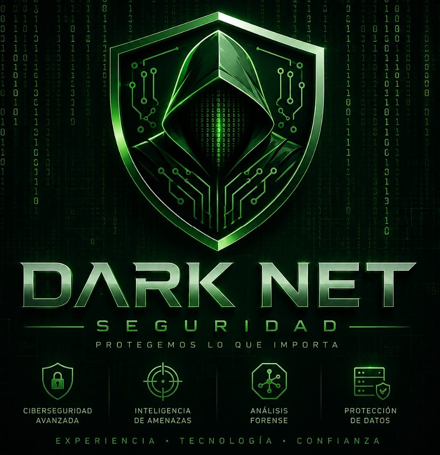

SEGURIDAD • EXPERIENCIA • TECNOLOGÍA • CONFIANZA
Empresa especializada en ciberseguridad avanzada, protección de datos, inteligencia tecnológica y análisis forense digital para entidades públicas y privadas.
Conocimiento técnico y estratégico aplicado a la seguridad moderna.
Innovación constante para enfrentar amenazas avanzadas.
Compromiso, confidencialidad y respaldo profesional.
Protección de redes, servidores y sistemas críticos.
Investigación y recuperación de evidencia tecnológica.
Monitoreo preventivo de riesgos y amenazas digitales.
Garantizamos integridad, disponibilidad y confidencialidad.
Nuestra visión es construir un entorno digital seguro con estándares internacionales de ciberseguridad, innovación tecnológica y monitoreo avanzado.